VOID SURFER · 실제 구현 확인
승인 시안이 아닌 실제 엔진·렌더러·HUD·CSS로 캡처했습니다. 재현을 위해 중력 0/충돌 무시를 사용했으며, 기하·보스 상태를 임의 주입하지 않았습니다. 아래 파일은 이 HTML을 직접 열어도 볼 수 있습니다.
PC / 가로 모바일
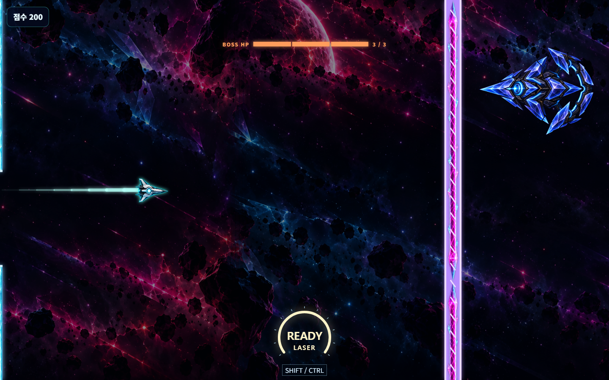
80 논리 픽셀 원자로 UI · PC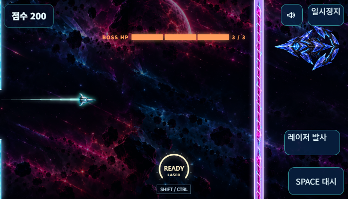
모바일 터치 발사/대시 유지벽 배출 → 암전 알림 → 보스 진입
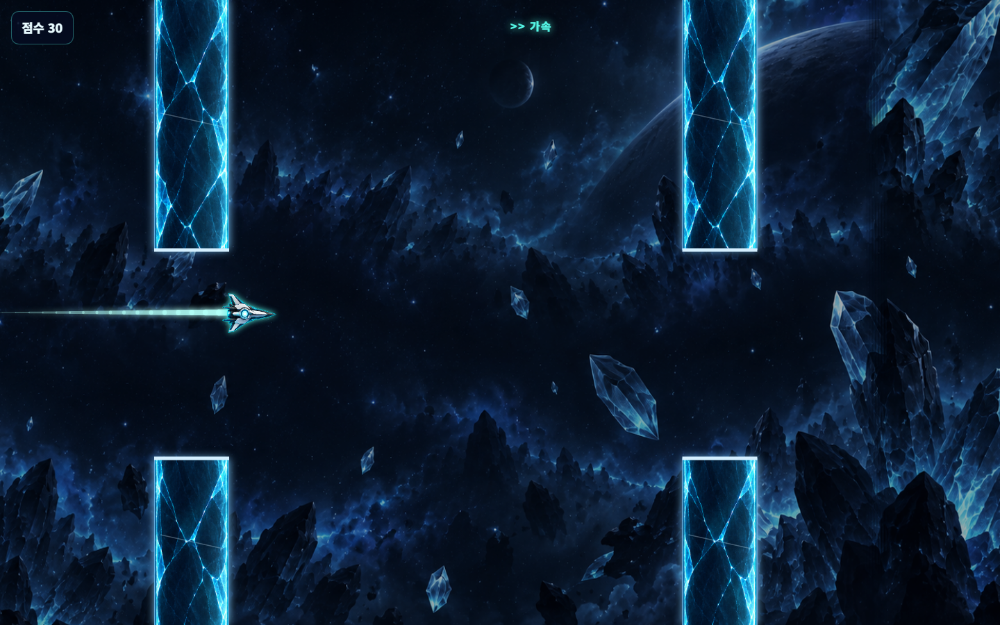
기존 벽이 남아 있는 동안 보스 진입 대기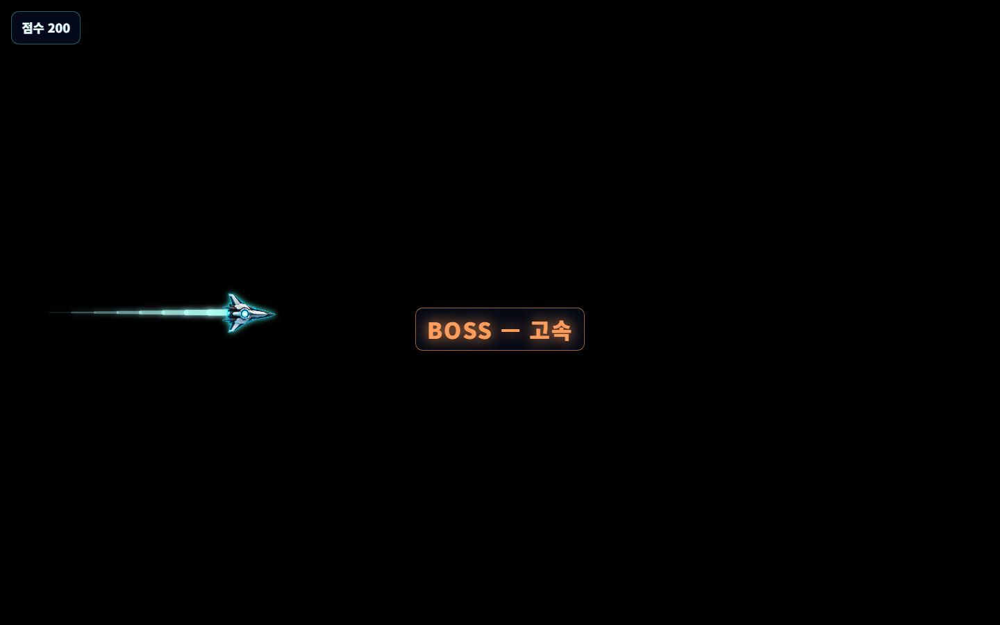
암전 중에도 기체/꼬리와 알림은 선명하게 표시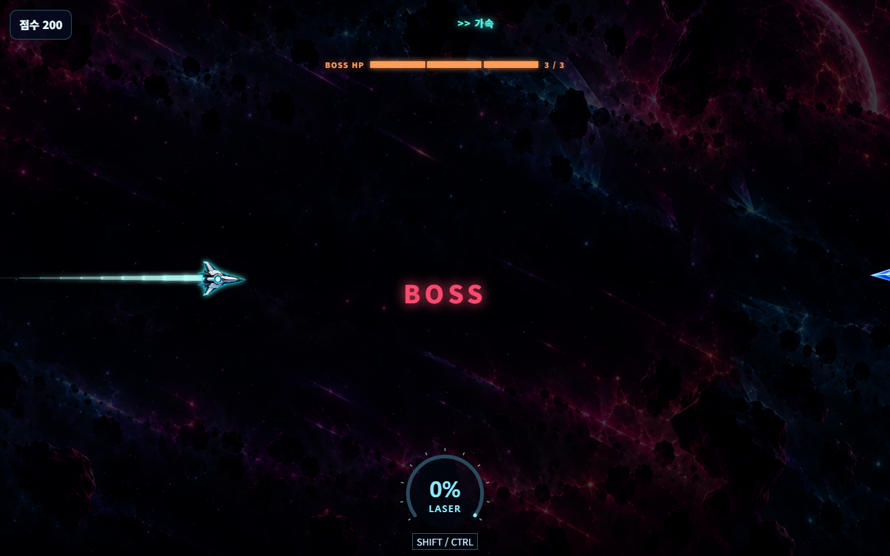
오른쪽에서 보스가 들어오면서 배경 밝기 복원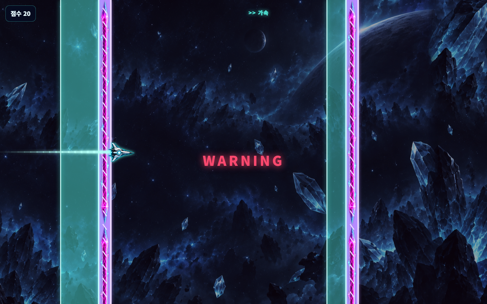
뒤로 지난 특수벽 안내 폭 75px 유지 · 앞으로 적용되는 폭은 37.5px직선 레이저의 실제 명중 / 빗나감
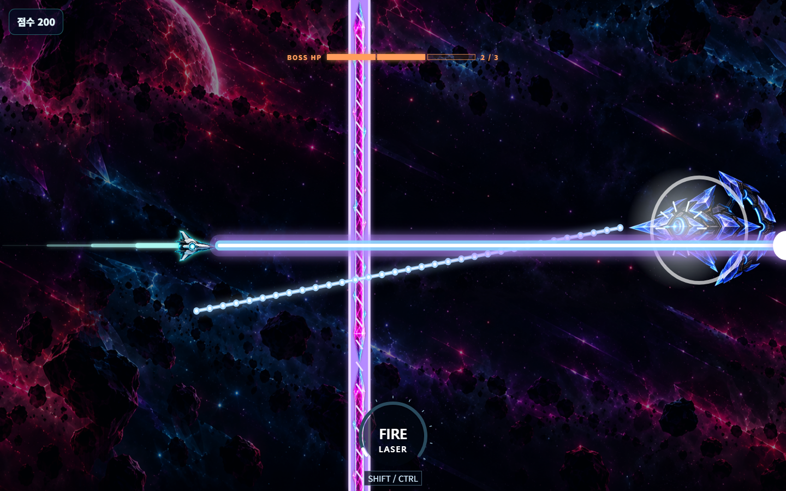
NOVA 명중 3 → 2 HP · 한 번만 피해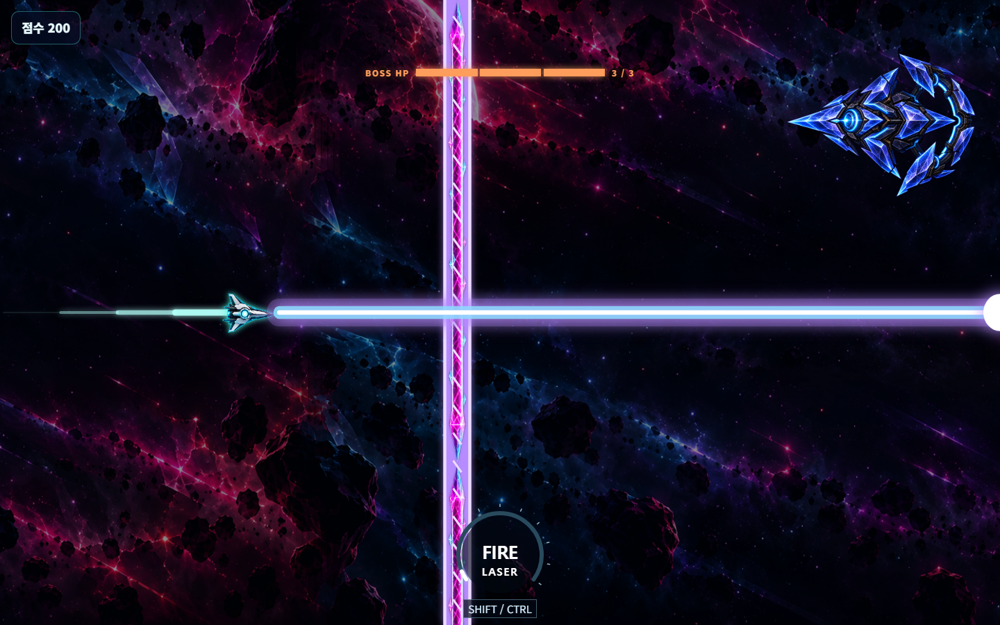
같은 높이에 보스가 없으면 3 HP 유지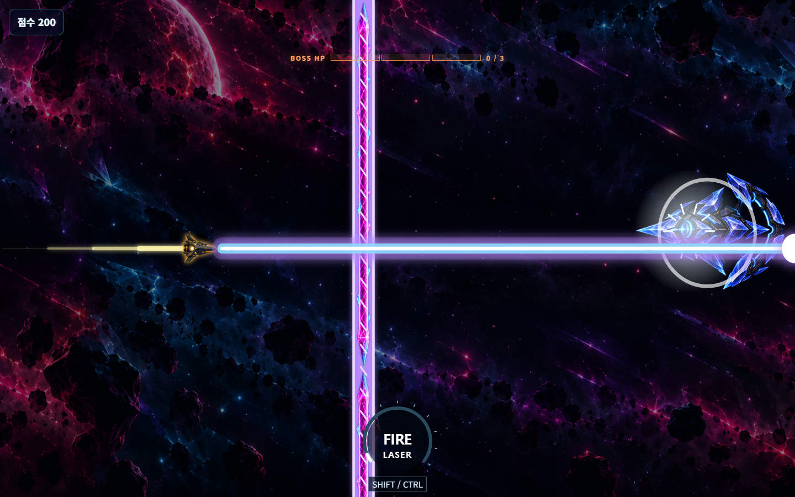
AEGIS 한 번 명중으로 3 → 0 HP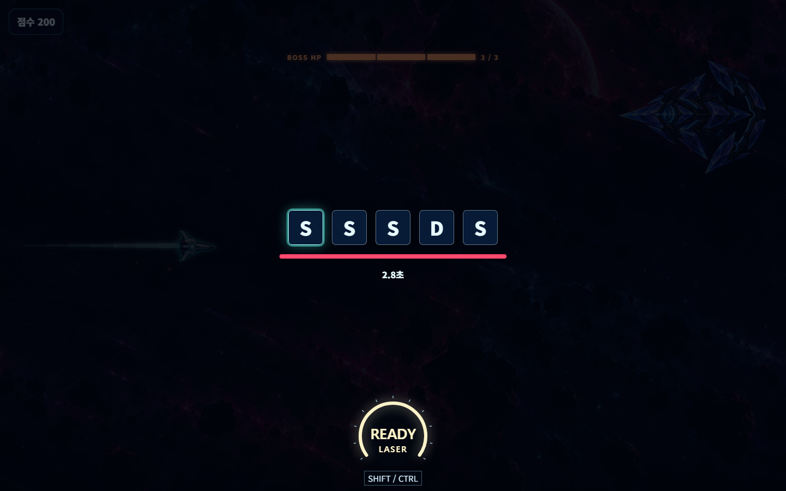
중복 제목/캔버스 키 제거 · 키 순서와 제한시간 유지전역 레이저 안내 / 발사
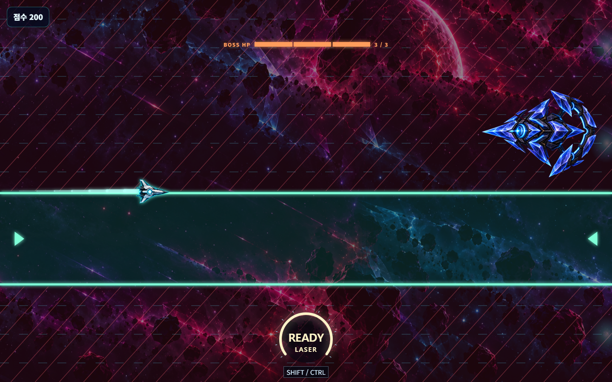
청록 안전 경계·화살표 / 붉은 위험 사선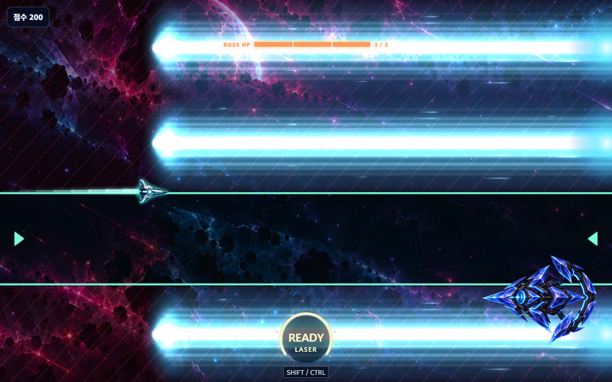
오른쪽 → 왼쪽 빛 연출과 안전 경계 유지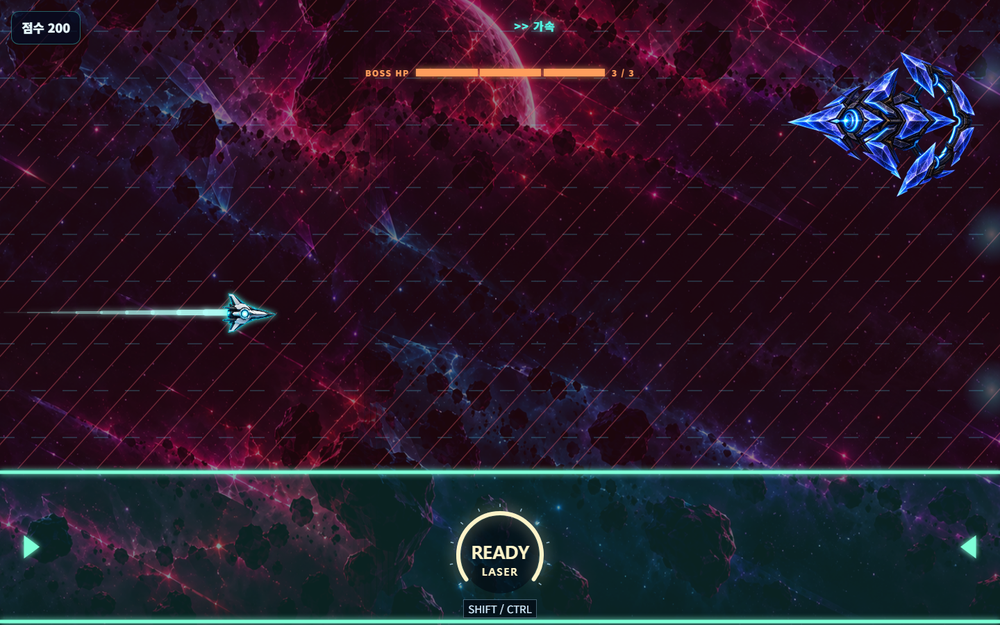
최하단 안전 구역과 원자로 UI · 가속 문구 유지6종 보스의 실제 자세
각 행: 아래 극점 / 위 극점 / 충전 / 포효. 실제 게임 화면을 보스 주변으로 잘라 비교했으므로 배경 위치도 달라집니다.
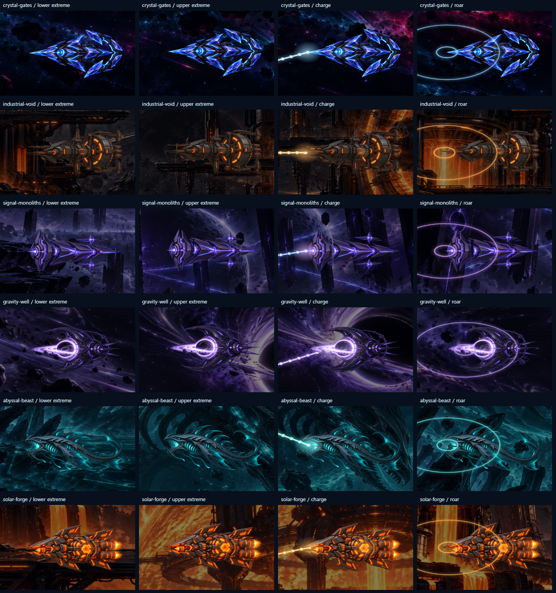
검증 보고서 · 캡처 크기/해시 검증